LT-Mem：面向终身场景理解的波动性感知时空记忆LT-Mem: Volatility-Aware Spatio-Temporal Memory for Lifelong Scene Understanding
把多会话 SLAM、对象级 3D 感知和长期记忆结合，适合关注长期建图与场景理解；但摘要中的指标和基线细节有限，记忆效果对 SLAM 对齐误差的敏感性需要验证。
一句话工作总结
在多会话 SLAM 的空间对齐基础上维护对象历史，解决长期运行中的身份保持与状态演化记忆问题。
摘要
LT-Mem 面向长期机器人运行中的多次重访和对象状态变化，使用多会话 SLAM 对齐各次观测，再通过证据评分保持跨会话对象身份，并依据对象波动性在覆盖、保持和多假设之间选择记忆更新动作。Tri-Memory 结构分别维护当前状态、变化信息和元历史；论文还提出包含多会话记录、持久身份标注和时序问答的 LT-VQA 数据集。
Long-term robot operation in evolving environments requires object-level understanding that persists across repeated revisits. Existing systems either overwrite history to maintain an up-to-date map or store semantic snapshots without consistent cross-session object identity, resulting in temporal amnesia: the systematic loss of object history that prevents answering queries such as "Where has the green chair been across all sessions?" We propose LT-Mem, a volatility-aware memory evolution framework that unifies spatially aligned instance-level 3D perception with volatility-conditioned temporal reasoning. First, a multi-session SLAM backbone provides spatially aligned per-object observations across sessions. Second, a reasoning layer governs how object memory evolves: deterministic evidence scoring preserves cross-session identity, and a volatility-aware policy selects among overwrite, hold, and multi-hypothesis actions based on each object's dynamics. Third, the resulting Tri-Memory structure (Live, Delta, Meta) preserves both current states and event histories, enabling longitudinal object-centric reasoning. We further introduce LT-VQA, a dataset and evaluation suite comprising multi-session recordings, persistent identity annotations, and temporal QA pairs. Experiments show that LT-Mem consistently outperforms baselines across all metrics while consuming an order of magnitude fewer tokens, and ablations confirm that gains are driven by the structured memory architecture rather than LLM capacity.
中文解读摘录
- 论文：arXiv:2608.19059 · PDF
- 作者：Yumin Lee, Hyoseok Ju, Giseop Kim
- 核心方法：以多会话 SLAM 做空间对齐，使用证据评分维持对象身份，并根据对象波动性选择覆盖、保持或多假设更新；Tri-Memory 结构分别保留当前状态、变化和元历史，并配套 LT-VQA 数据集。
- 判断：对长期建图和对象级场景理解有较强相关性。后续应重点验证记忆性能对回环/配准误差的敏感性、动态物体分布和多会话尺度一致性。
- 评分：7.9/10。
图表/页面预览
{kind=link}
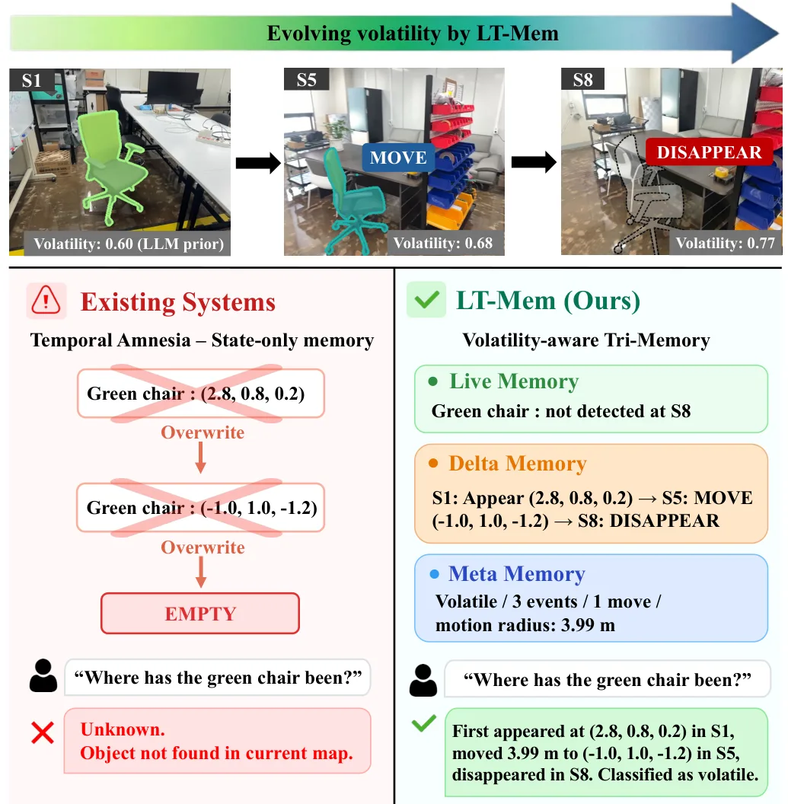
{kind=link}
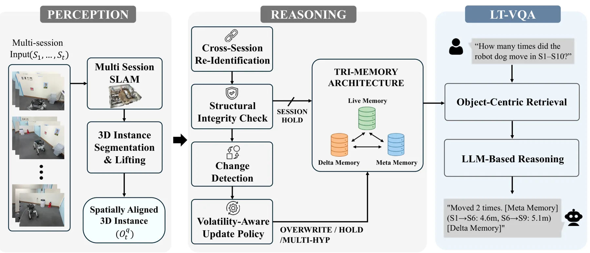
{kind=link}
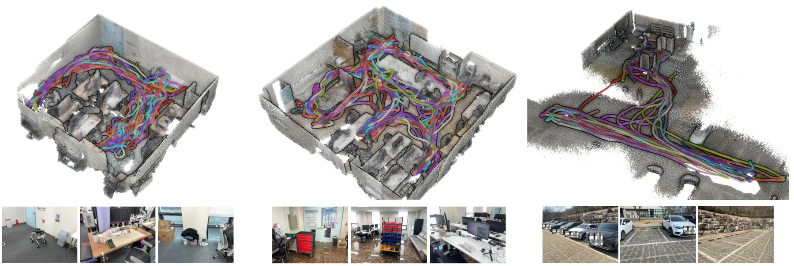
{kind=link}
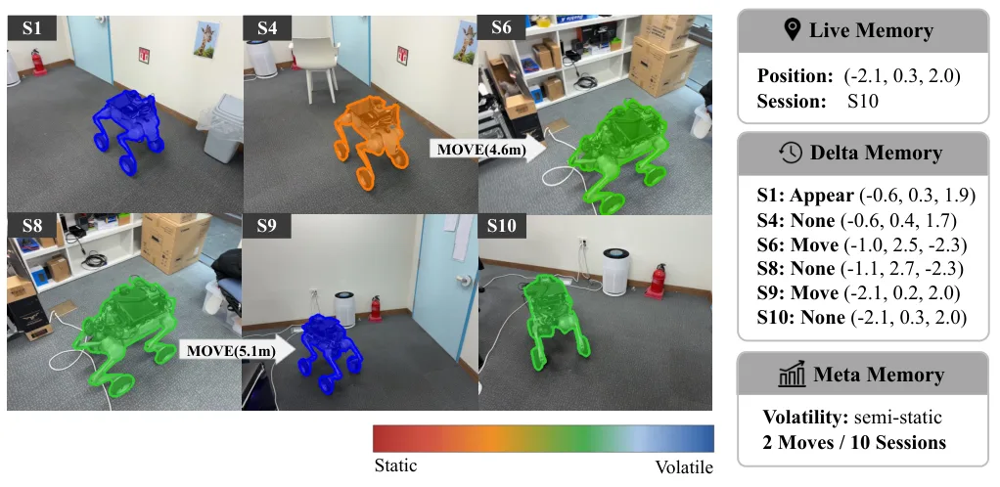
{kind=link}
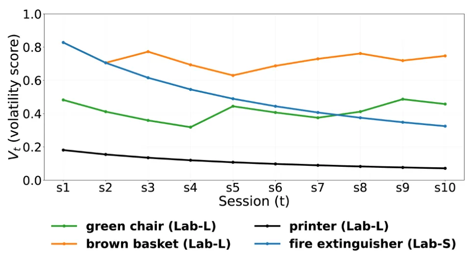
{kind=link}
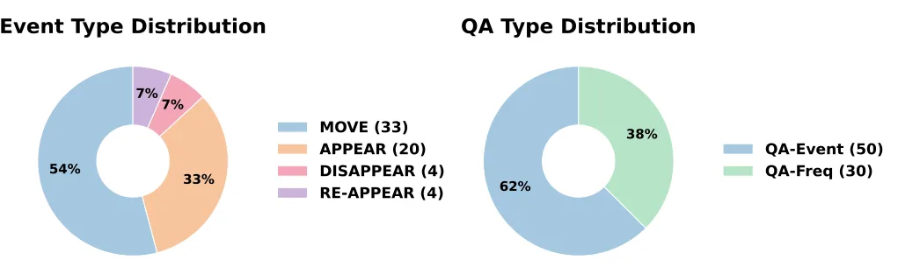
{kind=link}
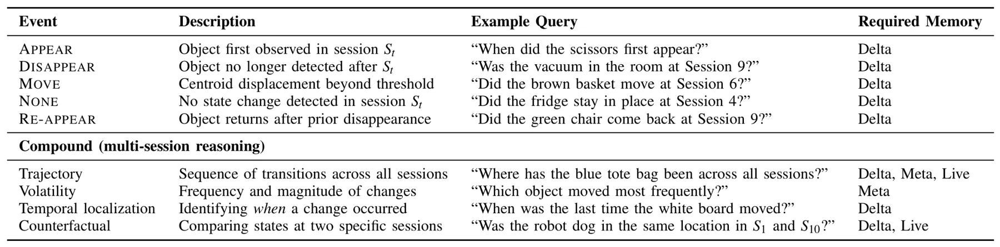
{kind=link}
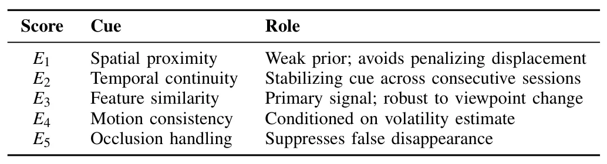
{kind=link}
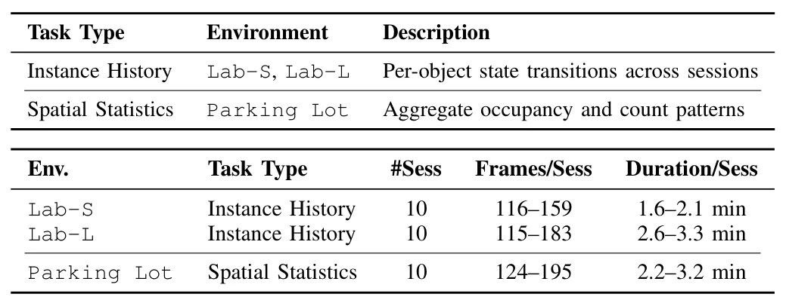
{kind=link}
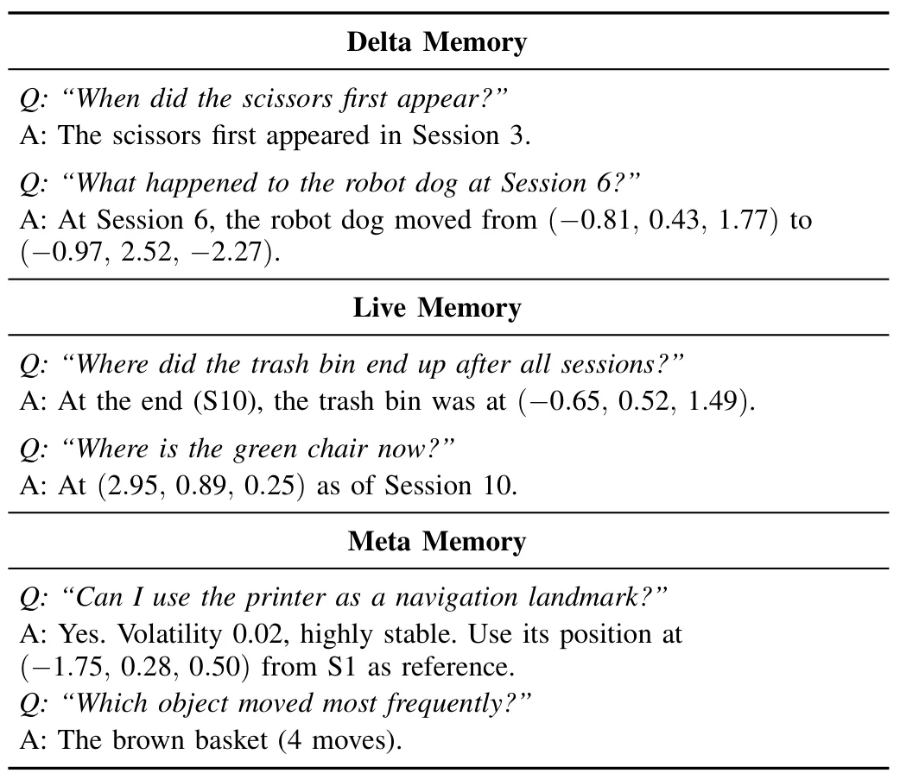
{kind=link}
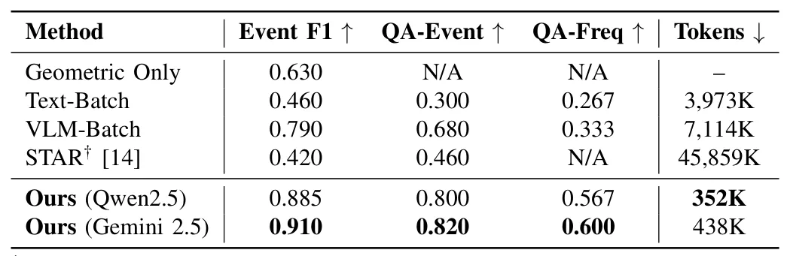
{kind=link}
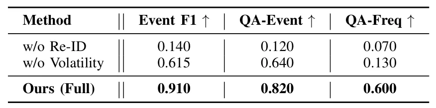